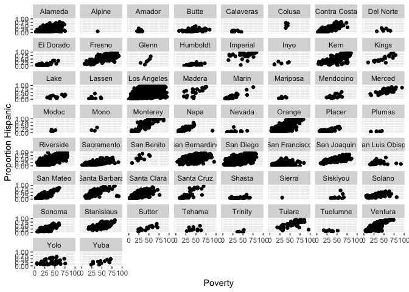

Exploratory Data Analysis
GEO 200CN - Quantitative Geography
Professor Noli Brazil
April 3, 2024
In last lab, you were introduced to the basics of R. In this lab, you will learn how to use R to run exploratory data analysis (EDA). The objectives of this lab are as follows:
- Learn how to run univariate descriptive statistics.
- Learn how to run bivariate descriptive statistics.
- Introduction to data visualization in R.
Installing and loading packages
As described in last lab, many functions are part of packages that are not preinstalled into R. In last lab, we installed the package tidyverse. We will be using one new package in this lab, so let’s install it.
install.packages("corrr")Installing a package does not mean its functions are accessible
during a given R session. You’ll need to load packages using the
function library(). Unlike installing, you need to use
library() every time you start an R session. A good
practice is to load all the packages you will be using in a given R
Markdown at the top of the file. We’ll be using the
tidyverse package in this lab, so let’s load it and the
corrr package in.
library(tidyverse)
library(corrr)Reading data
Let’s bring in some data to help illustrate EDA tools in R. I
uploaded a file on GitHub containing the number of Hispanic, white,
Asian, and black residents in 2018 in California neighborhoods taken
from the United States American Community
Survey. The data are also located on Canvas in the Lab and
Assignments Week 1 folder. To import this file in R, use the
read_csv() command, which is a part of the
tidyverse package.
neighborhoods <- read_csv("https://raw.githubusercontent.com/geo200cn/data/master/week2data.csv")The data object neighborhoods should have appeared in your environment window.
Let’s bring in another dataset containing some health and air
pollution data from California’s CalEnviroScreen
program. Read it in from GitHub using our new friend
read_csv().
ces <- read_csv("https://raw.githubusercontent.com/geo200cn/data/master/ces.csv")
names(ces)The dataset contains the poverty rate, air pollution levels (PM2.5), and whether the neighborhood is environmentally disadvantaged according to the CES.
Note the underscore in between read and
csv. There is a base R function called
read.csv(). What is the difference? The function
read.csv() stores your data into a regular data frame. The
function read_csv() stores your data in a special tidy R
object - a tibble.
Although the tidyverse works with all data objects,
its fundamental object type is the tibble. Tibbles are essentially a
special variant of data
frames that have desirable properties for printing and joining. An
important difference between tidy and base R is that
read_csv() will always read variables containing text as
character variables. In contrast, the base R function
read.csv() will sometimes convert a character variable to a
factor. Tidy R figures that if you really wanted a factor, you can
easily convert it when you load it in. read_csv() will also
not convert numbers with a leading zero into an integer. It figures that
if you want to convert it into an integer, you can do it after the data
are read in. In contrast, read.csv() will assume you want
it in an integer.
Data Wrangling
It is rare that the data you download is in exactly the right form
for analysis. For example, you might want to analyze just Yolo county
neighborhoods. Or you might want to discard certain variables from the
dataset to reduce clutter. Or you encounter missing data. The process of
gathering data in its raw form and molding it into a form that is
suitable for its end use is known as data wrangling. In this
lab, we won’t go through the various data wrangling functions that
tidyverse offers since all the data we will provide in
labs and assignments will be largely cleaned and ready for analysis. If
you would like to learn on your own, I’ve provided an extra lab on data
wrangling. You can also look through chapters 5 and 9-16 in R for Data Science.
However, I want to cover one of the most important innovations from
tidyverse, the pipe operator %>%,
before starting EDA.
Pipes are the workhorse of tidy analyses. Piping allows you to chain together many functions, eliminating the need to define multiple intermediate objects to use as the input to subsequent functions. Pipes are also the primary reason that tidyverse code is fundamentally easier to read than base R code.
It may seem complicated at first, but what the pipe does is actually quite simple. That is, it allows users to write linear code. To illustrate the use of the pipe, consider the following base R code that takes the mean of the log of three numbers
mean(log(c(1, 3, 9)))## [1] 1.098612Notice how the numbers c(1, 3, 9) are nested inside
log(), which is then nested inside mean(). If
you’re reading the code from left-to-right, it means the functions are
performed in reverse order from how they are written. If we broke the
code down into its three functions, we would actually expect the order
of operations to proceed as follows
- Concatenate numbers into vector
c(...) - Log the numeric vector
log(...) - Estimate the mean of the logged numeric vector
mean(...)
Now consider how you would do this using pipes.
c(1, 3, 9) %>%
log() %>%
mean()## [1] 1.098612In contrast to the nested base code, the tidy code is linear; in other words, the code appears in the same order (moving from left to right) as the operations are performed.
Let’s use pipes to conduct the following data wrangling tasks on the data object neighborhoods.
- rename the variable NAME to County
- keep all variables except nhasn
- create the percent race/ethnicity and majority Hispanic variables
- join the ces file
neighces <- neighborhoods %>%
rename(County = NAME) %>%
select(GEOID, County, hisp, nhblk, nhwhite, tpopr) %>%
mutate(pwhite = nhwhite/tpopr, phisp = hisp/tpopr,
pblk = nhblk/tpopr,
mhisp = ifelse(phisp > 0.5, "Majority","Not Majority")) %>%
left_join(ces, by = "GEOID")In the code above, the tibble neighborhoods is piped into
the command rename(). This command changes NAME to
County. The resulting object gets piped into the command
select(), which keeps the variables GEOID,
County, hisp, nhblk, nhwhite,
tpopr. This result gets piped into the mutate()
function, which creates the variables pwhite, phisp,
and pblk, which represent the proportion of the population that
is white, Hispanic and Black, and mhisp, which designates
neighborhoods as “Majority” Hispanic if its proportion Hispanic is
greater than 0.5, and “Not Majority” otherwise. This then gets piped in
the left_join() function, which joins the ces
dataset using the ID GEOID which uniquely identifies each
neighborhood.
Piping makes code clearer, and simultaneously gets rid of the need to define any intermediate objects that you would have needed to keep track of while reading the code.
Exploratory Data Analysis
Below we go through several methods for conducting Exploratory Data Analysis (EDA). We first start with univariate and bivariate statistics. We then go through how to construct charts and graphs.
Univariate statistics
Univariate statistics provide summaries of a single variable. The most common statistics capture a distribution’s central tendency or spread.
Central tendency
The most common univariate statistics are those that measure central
tendency. The most common measure of central tendency is the mean. We
can calculate the mean of a variable using the function **tidyverse*
function summarize().
summarize(neighces, mean(PM2.5))## # A tibble: 1 × 1
## `mean(PM2.5)`
## <dbl>
## 1 10.4The first argument inside summarize() is the data object
neighces and the second argument is the function calculating
the specific summary statistic, in this case mean(), which
unsurprisingly calculates the mean of the variable you indicate in
between the parentheses.
Other common measures of central tendency are the median (50th percentile)
summarize(neighces,
median(PM2.5))## # A tibble: 1 × 1
## `median(PM2.5)`
## <dbl>
## 1 10.4and the mode (most frequent value). There is no base function for
calculating the mode, so lets create our own function called
getmode().
# Create a function that calculates the statistical mode
getmode <- function(v) {
uniqv <- unique(v)
uniqv[which.max(tabulate(match(v, uniqv)))]
}We can plug in all three measures within a single
summarize().
neighces %>%
summarize(Mean = mean(PM2.5),
Median = median(PM2.5),
Mode = getmode(PM2.5))## # A tibble: 1 × 3
## Mean Median Mode
## <dbl> <dbl> <dbl>
## 1 10.4 10.4 12.0The mean and the mode have the same value. What does this say about the shape of the distribution of PM 2.5?
Spread
The other common set of univariate statistics measure a
distribution’s spread. The three most common measures of spread are the
variance, its buddy the standard deviation and the Interquartile Range
(IQR). We calculate the variance, standard deviation and IQR using the
functions var(), sd() and IQR(),
respectively. Let’s combine them with measures of central tendency into
a single summarize().
neighces %>%
summarize(Mean = mean(PM2.5),
Median = median(PM2.5),
Mode = getmode(PM2.5),
Variance = var(PM2.5),
SD = sd(PM2.5),
IQR = IQR(PM2.5))## # A tibble: 1 × 6
## Mean Median Mode Variance SD IQR
## <dbl> <dbl> <dbl> <dbl> <dbl> <dbl>
## 1 10.4 10.4 12.0 6.74 2.60 3.35You can get a summary of all the variables in a data frame using the
summary() function.
summary(neighces)## GEOID County hisp nhblk
## Min. :6.001e+09 Length:7937 Min. : 0 Min. : 0.0
## 1st Qu.:6.037e+09 Class :character 1st Qu.: 641 1st Qu.: 34.0
## Median :6.059e+09 Mode :character Median : 1420 Median : 116.0
## Mean :6.055e+09 Mean : 1909 Mean : 269.5
## 3rd Qu.:6.073e+09 3rd Qu.: 2789 3rd Qu.: 311.0
## Max. :6.115e+09 Max. :14894 Max. :5469.0
## nhwhite tpopr pwhite phisp
## Min. : 0 Min. : 66 Min. :0.0000 Min. :0.0000
## 1st Qu.: 649 1st Qu.: 3495 1st Qu.:0.1466 1st Qu.:0.1537
## Median : 1590 Median : 4632 Median :0.3783 Median :0.3088
## Mean : 1839 Mean : 4904 Mean :0.3895 Mean :0.3797
## 3rd Qu.: 2681 3rd Qu.: 5924 3rd Qu.:0.6131 3rd Qu.:0.5805
## Max. :22842 Max. :38932 Max. :0.9804 Max. :1.0000
## pblk mhisp Poverty PM2.5
## Min. :0.000000 Length:7937 Min. : 0.0 Min. : 1.651
## 1st Qu.:0.008253 Class :character 1st Qu.:19.2 1st Qu.: 8.698
## Median :0.025617 Mode :character Median :33.5 Median :10.370
## Mean :0.055452 Mean :36.4 Mean :10.377
## 3rd Qu.:0.065583 3rd Qu.:51.6 3rd Qu.:12.050
## Max. :0.839158 Max. :96.2 Max. :19.600
## disadvantage
## Length:7937
## Class :character
## Mode :character
##
##
## You’ll notice that some variables are not given summary statistics. These are of class character. How do we summarize variables whose values are of class character?
Categorical variable
You summarize a categorical variable using a frequency table. What
are the percentages of neighborhoods that are considered to be
environmentally burdened in California? To get these percentages, you’ll
need to combine the functions group_by(),
summarize() and mutate() using
%>%.
neighces %>%
group_by(disadvantage) %>%
summarize(n = n()) %>%
mutate(freq = n / sum(n))## # A tibble: 2 × 3
## disadvantage n freq
## <chr> <int> <dbl>
## 1 No 5947 0.749
## 2 Yes 1990 0.251The group_by() function applies another function
independently within groups of observations (where the groups are
specified by a categorical variable in your data frame). In the code
above, we group by whether neighborhoods are considered to be
disadvantaged or not. We used summarize() to count the
number of neighborhoods by disadvantage designation. The function to get
a count is n(), and we saved this count in a variable named
n. The code within mutate() calculates the
frequencies.
Bivariate statistics
A frequent goal in data analysis is to efficiently describe or measure the strength of relationships between variables, or to detect associations between categorical variables used to set up a cross tabulation. A related goal may be to determine which variables are related in a predictive sense to a particular outcome variable, or put another way, to learn how best to predict future values of a outcome variable. Correlation, along with measures of association constructed from tables, provide the means for constructing and displaying such relationships.
The correlation coefficient is used to measure the association
between two numeric variables. Use the function cor in R.
What is the correlation between PM2.5 levels and percent Hispanic? What
about percent White?
neighces %>%
summarize(hispcor = cor(phisp,PM2.5, use = "complete.obs"),
whitecor = cor(pwhite,PM2.5, use = "complete.obs"))## # A tibble: 1 × 2
## hispcor whitecor
## <dbl> <dbl>
## 1 0.366 -0.372You can obtain a correlation matrix to show bivariate correlation
across multiple variables. One way of doing this in R is to use the
correlate() function, which is found in the package
corrr.
neighces %>%
select(pwhite, phisp, pblk, Poverty, `PM2.5`) %>%
correlate()## # A tibble: 5 × 6
## term pwhite phisp pblk Poverty PM2.5
## <chr> <dbl> <dbl> <dbl> <dbl> <dbl>
## 1 pwhite NA -0.771 -0.329 -0.598 -0.372
## 2 phisp -0.771 NA 0.0326 0.701 0.366
## 3 pblk -0.329 0.0326 NA 0.223 0.0766
## 4 Poverty -0.598 0.701 0.223 NA 0.234
## 5 PM2.5 -0.372 0.366 0.0766 0.234 NATo summarize the relationship between two categorical variables,
you’ll need to find the proportion of observations for each combination,
also known as a cross tabulation. Let’s create a cross tabulation of the
categorical variables mhisp and disadvantage. We do
this by using both variables in the group_by() command.
neighces %>%
group_by(disadvantage, mhisp) %>%
summarize(n = n()) %>%
mutate(freq = n / sum(n))## # A tibble: 4 × 4
## # Groups: disadvantage [2]
## disadvantage mhisp n freq
## <chr> <chr> <int> <dbl>
## 1 No Majority 980 0.165
## 2 No Not Majority 4967 0.835
## 3 Yes Majority 1492 0.750
## 4 Yes Not Majority 498 0.250A much higher proportion of disadvantaged neighborhoods are Majority Hispanic (0.750) compared to non disadvantage neighborhoods (0.165).
What about summarizing the relationship between a categorical and numeric variable? A typical way of summarizing the relationship between a categorical variable and a numeric variable is to take the mean of the numeric variable for each level of the categorical variable. What is the mean pollution levels for majority vs non-majority Hispanic neighborhoods?
neighces %>%
group_by(mhisp) %>%
summarize(Mean = mean(PM2.5))## # A tibble: 2 × 2
## mhisp Mean
## <chr> <dbl>
## 1 Majority 11.6
## 2 Not Majority 9.82You can also find the mean PM2.5 levels by county using the same code.
neighces %>%
group_by(County) %>%
summarize(Mean = mean(PM2.5)) ## # A tibble: 58 × 2
## County Mean
## <chr> <dbl>
## 1 Alameda 8.78
## 2 Alpine 2.59
## 3 Amador 6.65
## 4 Butte 9.05
## 5 Calaveras 6.26
## 6 Colusa 7.24
## 7 Contra Costa 8.01
## 8 Del Norte 3.80
## 9 El Dorado 6.78
## 10 Fresno 15.2
## # ℹ 48 more rowsHow can you add to the above code to find out the top 10 counties in average PM2.5 levels?
Data visualization
Instead of tables and summary statistics, you might want to summarize
your data using plots. The base R function for plotting is
plot(). We can create a scatterplot (more on this later) of
proportion and Hispanic and the poverty rate by typing in the
following
plot(neighces$phisp~neighces$Poverty)The tidyverse’s data visualization package is
ggplot2. The graphing function is ggplot()
and it takes on the basic template
ggplot(data = <DATA>) +
<GEOM_FUNCTION>(mapping = aes(x, y)) +
<OPTIONS>()ggplot()is the base function where you specify your dataset using thedata = <DATA>argument.You then need to build on this base by using the plus operator
+and<GEOM_FUNCTION>()where<GEOM_FUNCTION>()is a unique function indicating the type of graph you want to plot. Each unique function has its unique set of mapping arguments which you specify using themapping = aes()argument. Charts and graphs have an x-axis, y-axis, or both. Check this ggplot cheat sheet for all possible geoms.<OPTIONS>()are a set of functions you can specify to change the look of the graph, for example relabeling the axes or adding a title.
The basic idea is that a ggplot graphic layers geometric objects (circles, lines, etc), themes, and scales on top of data.
You first start out with the base layer. It represents the empty
ggplot layer defined by the ggplot() function.
ggplot(neighces)
We haven’t told ggplot() what type of geometric
object(s) we want to plot, nor how the variables should be mapped to the
geometric objects, so we just have a blank plot. We have geoms to paint
the blank canvas.
From here, we add a “geom” layer to the ggplot object. Layers are
added to ggplot objects using +, instead of
%>%, since you are not explicitly piping an object into
each subsequent layer, but adding layers on top of one another. Each
geom is associated with a specific type of graph.
Histogram
Histograms are used to summarize a single numeric variable. To create
a histogram, use geom_histogram() for
<GEOM_FUNCTION()>. Let’s create a histogram of PM
2.5.
ggplot(neighces) +
geom_histogram(mapping = aes(x=PM2.5)) +
xlab("PM 2.5") Because a single variable is plotted on the x-axis, we specify
x = in aes() but not a y =. The
xlab() function, which is an example of a
<OPTIONS>() function, allows you to relabel the title
of the x-axis (ylab() is for the y-axis). The message
before the plot tells us that we can use the bins =
argument to change the number of bins used to produce the histogram. You
can increase the number of bins to make the bins narrower and thus get a
finer grain of detail. Or you can decrease the number of bins to get a
broader visual summary of the shape of the variable’s distribution. Try
changing the number of bins and see what you get.
Density plot
A density plot is a plot of the local relative frequency or density
of points along the number line or x-axis of a plot. The local density
is determined by summing the individual “kernel” densities for each
point. Where points occur more frequently, this sum, and consequently
the local density, will be greater. Density plots get around some of the
problems that histograms have. geom_density() is the
associated <GEOM_FUNCTION()> for a density plot.
Let’s make a density plot of PM 2.5.
ggplot(neighces) +
geom_density(mapping = aes(x=PM2.5)) +
ylab("PM 2.5") Plots with both a histogram and density line can be created:
ggplot(neighces, aes(x=PM2.5)) +
geom_histogram(aes(y=..density..), colour="black", fill="white")+
geom_density(alpha=.2, fill="blue") alpha = controls the transparency and
fill = controls for the color of the plot.
Boxplot
We can use a boxplot (or a box-and-whisker plot) to visually
summarize the distribution of a single numeric variable. Use
geom_boxplot() for <GEOM_FUNCTION()> to
create a boxplot. Let’s examine PM 2.5
ggplot(neighces) +
geom_boxplot(mapping = aes(y=PM2.5)) +
ylab("PM 2.5") The top, middle and bottom of the box represent the 75th, 50th, and 25th percentiles, respectively. The points outside the whiskers represent outliers. Outliers are defined as having values that are either larger than the 75th percentile plus 1.5 times the IQR or smaller than the 25th percentile minus 1.5 times the IQR.
We can also use the boxplot to examine the relationship between a
categorical and numeric variable. Let’s examine the distribution of PM
2.5 by majority vs. non majority Hispanic. Because we are examining the
association between two variables, we need to specify x and
y variables within aes()
ggplot(neighces) +
geom_boxplot(mapping = aes(x = mhisp, y=PM2.5)) +
ylab("PM 2.5") +
xlab("Hispanic population") Barchart
We use a bar chart to summarize a categorical variable. Bar charts
show either the number or frequency of each category. To create a bar
chart, use geom_bar() for
<GEOM_FUNCTION>(). Let’s show a bar chart of
environmentally disadvantaged communities.
ggplot(neighces, aes(x=factor(disadvantage)))+
geom_bar(stat="count")+
xlab("Disadvantaged neighborhood") +
ylab("Count") This provides the number of observations in each category. What if we
want to get the percentage? There is no stat = "freq"
option, so we can borrow from the code we used earlier to create our
disadvantage frequency table and pipe this table directly into
ggplot().
neighces %>%
group_by(disadvantage) %>%
summarize(n = n()) %>%
mutate(freq = n / sum(n)) %>%
ggplot() +
geom_bar(mapping=aes(x=disadvantage, y=freq),stat="identity") +
xlab("Disadvantaged neighborhood") +
ylab("Proportion") We didn’t need to specify data = <DATA> in
ggplot() because it was piped in. Within
aes(), we specified the categorical variable
disadvantage on the x-axis and then the proportion of
neighborhoods freq on the y-axis. The argument
stat = "identity" tells ggplot() to plot the
exact value listed for the variable freq.
Scatterplot
The scatterplot is the traditional graph for visualizing the
association between two numeric variables. For scatterplots, we use
geom_point() for <GEOM_FUNCTION>().
Because we are plotting two variables, we specify an x and
y variable. Does proportion Hispanic change with greater
poverty in the neighborhood?
ggplot(neighces) +
geom_point(mapping = aes(x = Poverty,
y = phisp)) +
xlab("Poverty") +
ylab("Proportion Hispanic")What does scatter plot suggest about the relationship between the two variables?
You can add the facet_wrap() function to create a
scatterplot for each county.
ggplot(neighces) +
geom_point(mapping = aes(x = Poverty,
y = phisp)) +
xlab("Poverty") +
ylab("Proportion Hispanic") +
facet_wrap(~County) 
Dot plot
A (Cleveland) dot plot displays the values of a single variable as
symbols plotted along a line, with a separate line for each observation.
The associated <GEOM_FUNCTION>() is
geom_point(). Here is a dot plot of the mean PM 2.5 levels
for each county in California. We have to first create a tibble
containing the mean levels, and pipe that into ggplot()
neighces %>%
group_by(County) %>%
summarize(Mean = mean(PM2.5)) %>%
ggplot() +
geom_point(aes(x=County, y=Mean)) +
coord_flip()coord_flip() flips the x and y axes (take it out and see
how ugly the plot is).
The default ordering of the y-axis is alphabetical. We can reorder
the counties based on highest to lowest in mean PM 2.5 using the
function reorder().
neighces %>%
group_by(County) %>%
summarize(Mean = mean(PM2.5)) %>%
ggplot() +
geom_point(aes(x=Mean, y=reorder(County,Mean))) +
ylab("County") +
xlab("PM 2.5")ggplot() has many additional functions and features that
allow you to adjust the the aesthetic features of your plot. For
example, we can add additional text to your plot to enhance its
readability. To illustrate this, let’s create a scatterplot of mean PM
2.5 and mean poverty rate for each county, but indicate the county
corresponding to each point on the plot. We do this by adding the
geom_text() function.
neighces %>%
group_by(County) %>%
summarize(MeanPM = mean(PM2.5),
MeanPov = mean(Poverty)) %>%
ggplot() +
geom_point(aes(x=MeanPM, y=MeanPov)) +
geom_text(aes(x=MeanPM, y=MeanPov, label = County)) +
ylab("County") +
xlab("PM 2.5")ggplot() is a powerful function, and you can make a lot
of really visually captivating graphs. You can change colors, add text
labels, layer different plots on top of one another or side by side. You
can also make maps with the function, which we’ll cover a few labs from
now. You can also make your graphs really “pretty” and professional
looking by altering graphing features using <OPTIONS(),
including colors, labels, titles and axes. For a list of
ggplot() functions that alter various features of a graph,
check out Chapter 28
in RDS.
Answer the assignment 2 questions that are uploaded on Canvas. Submit an R Markdown and its knitted document on Canvas by the assignment due date.

This
work is licensed under a
Creative
Commons Attribution-NonCommercial 4.0 International License.
Website created and maintained by Noli Brazil